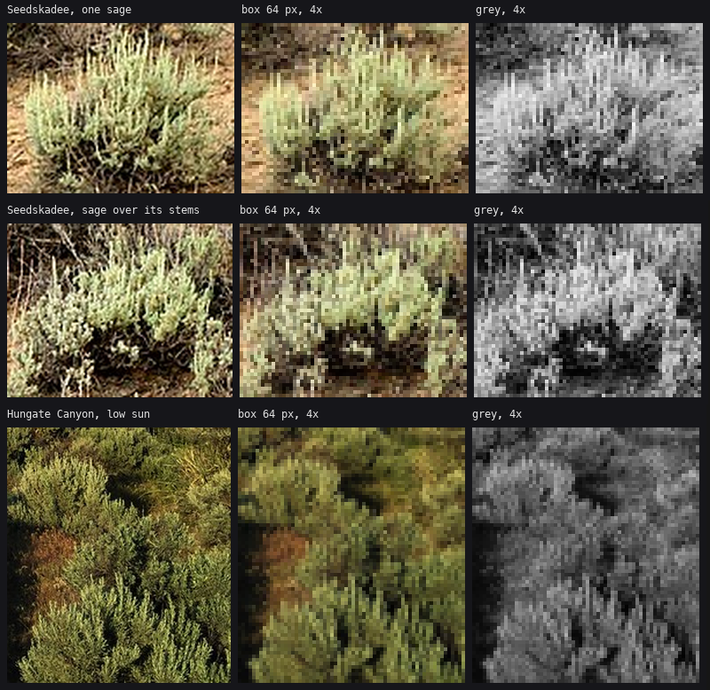

1. Box-downsample the photo
The instrument that found the sagebrush. Works for any subject.
The problem it solves
A photo of a sagebrush is a mist of grey-green leaves a few millimetres long, twisted grey trunks and brown soil. That's not what you paint. At game resolution a whole bush is 30 to 110 pixels wide, and a real painter has already decided what survives at that size. I didn't know what survives, so I guessed four times and got a little tree, an umbrella, rain and cauliflower (page 3 shows all four).
What finally told me was looking at the photo at the size I paint at. Take the bush, shrink it to 64 pixels wide with a box filter, and blow it back up with nearest neighbour. What's left is what a sagebrush is at 64 px.

Photo | box 64 px at 4× | the same in grey. From figs.fig_downsample.
What this sheet told me, row by row:
- A sage at 64 px is a packed row of pale upright tongues, 2 to 4 px wide, with rounded tops and dark slots between them. It isn't a mass with texture on it, and it isn't dots or lobes.
- The foliage comes almost to the ground. The trunk shows only as a dark tangle in the bottom quarter, through gaps. My first bushes stood on trunks, and those are trees.
- The dark is inside the bush, not only under it. Row 2's black hollow under the sprays is the biggest value shape in the picture.
- In low sun (row 3) the shadow side is deep olive toward near-black, and the lit tops are yellow-olive, not silver. My first palette made sage mint.
The code
It's the same few lines I ran in the study (refs/sage_ds_*.png in the study folder came out of them). The version in figs.py is:
def box_downsample(path, box, width=64):
"""The instrument: crop the photo to one plant, shrink it with a BOX filter (every output
pixel is the plain mean of the photo pixels under it) to the width we paint at."""
im = Image.open(path).convert("RGB").crop(box)
small = im.resize((width, max(1, int(width * im.height / im.width))), Image.BOX)
return np.array(im), np.array(small)
Three choices matter:
- Box, not Lanczos or bicubic. A box filter is an honest average, so it shows the values a pixel would have if it were a patch of that bush. Sharpening filters add halos that look like outlines, and outlines are exactly the thing you must not paint on a mass (SYNTHESIS: "a textured mass ends in a fringe").
- Crop to one plant first. The width you downsample to has to be the width the plant will have in the game. I used 64 px because that's a near sage in a 480×270 scene. Do it again at 32 and 16 when you're working on those sizes.
- Look at it in grey too. Value is the structure. The grey column is what I compared my greyscale bushes against.
How I used it: the check loop
The sheet isn't a one-time reference. Every stage-1 bush got put beside it at the same scale:

Left: the Seedskadee sage, box 64 px, grey, 8×. Right: my final greyscale sage (s1_sage.py), 8×.
The comparison is crude on purpose, because the photo still has the background in it. What I read off it was proportions and value grouping:
- Is the bush wider than tall? The photo's is about 1.5:1.
- Is the light in upright tongues or in blobs?
- Where is the darkest shape? It's in the lower middle, inside the bush.
- How much of the bush is lit? About two thirds.
Each wrong model failed one of those questions visibly at 8×, and once I looked it failed it in a minute.
Two more uses I'd make standard:
- For bark (page 8): the Dixie Mountain trunk box-downsampled to 40 px wide showed me the plates are finer and more flecked than my jigsaw. I exaggerate them on purpose, but I learned how much from this.
- For the far field: downsample a whole landscape photo to scene size and see where individual shrubs stop being shapes. In the Seedskadee frame it's at about 2 px per shrub. That's where my far "sage sea" takes over (page 7).
Where it falls short
The box filter keeps what a camera sees, including mush. It won't tell you where to be more decisive than the photo. Ferrari's grass is about twice as directional as a photo's (the observation student measured it). So the downsampled photo tells you what the thing is. It doesn't tell you how to draw it. Use it to judge form and Ferrari to judge craft, never the other way round.